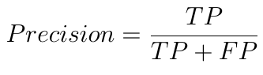
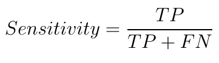
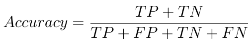
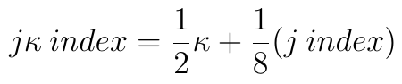

به نام خدا
طراحی و پیادهسازی یک سیستم تشخیص بیدرنگ آریتمی قلبی بر بستر اینترنت اشیا
مرضیه تاجیک
دانشکدهی مهندسی کامپیوتر و فناوری اطلاعات
استاد راهنما: دکتر ممتازپور
استاد داور: دکتر صاحبزمانی

فهرست مطالب
۱. مقدمه
۲. مرور مفاهیم
۲.۱ سیگنال نوار قلب
۲.۲ ترکیب QRS
۲.۳ مسائل دستهبندی
۲.۴ معیارهای کارایی در مسائل دستهبندی
۳. روش کار
۳.۱ عملیات پیشپردازش
۳.۲ ارسال دادههای پیشپردازششده به سرور
۳.۳ پردازش دادهها در سمت سرور
۳.۴ ارزیابی مدل آموزشدادهشده
۴. نتایج
۵. نتیجهگیری
۶. مراجع
مقدمه
ضرورت تشخیص خودکار آریتمی قلبی
آریتمی قلبی
به وجود آمدن اختلال در آهنگ طبیعی تپش قلب
در بیشتر موارد بیخطر
در دیگر موارد، در صورت عدم رسیدگی به موقع میتواند کشنده باشد.
علت اصلی ایستهای قلبی ناگهانی [1]
تشخیص آریتمی در کارهای گذشته
پیادهسازی انواع متنوعی از الگوریتمهای دستهبندی برای تشخیص آریتمی
مانند سیستمهای فازی، ماشینهای بردار پشتیبانی و شبکههای عصبی
بیدرنگ نبودن اکثر روشهای پیادهسازیشده در گذشته
2بیان صورت مسئله
صورت مسئله
طراحی و پیادهسازی بستری بیدرنگ برای تشخیص انواع آریتمیهای قلبی
ورودی سیستم: سیگنال دیجیتال ضربان قلب
خروجی سیستم: نوع آریتمی تشخیصدادهشده برای هر ضربان
نیازمندیهای پروژه
بیدرنگ بودن
قابلحملبودن
دقت و حساسیت بالای سیستم در تشخیص آریتمی
رابط کاربری مناسب و قابلیت استفادهی آسان
3راهحل ارائهشده
پیادهسازی بر بستر اینترنت اشیا
ارتباط بیسیم بین دستگاه همراه بیمار با یک سرور
مراحل کلی تشخیص نوع ضربان
مرور مفاهیم
سیگنال نوار قلب (Electrocardiogram)
قرارگیری تعدادی الکترود بر روی پوست
اندازهگیری نوسانات پتانسیل الکتریکی سطح پوست و تولید یک سیگنال آنالوگ
حذف نویز از سیگنال آنالوگ و تبدیل آن به سیگنال دیجیتال
نتیجهی رسم منحنی این سیگنال: سیگنال متناوب نوار قلب
ترکیب QRS
۵ موج پراهمیت در هر سیکل ضربان قلب
۱. P
۲. Q
۳. R
۴. S
۵. T
طول طبیعی بازهی QRS : بین ۰/۰۸ تا ۰/۱ ثانیه [3]
طول طبیعی بازهی RR : بین ۰/۶۷ تا ۱/۰۰ ثانیه [4]
آریتمی قلبی
دلیل ایجاد: عدم انتقال درست سیگنالهای الکتریکی در قلب
علایم: تپش قلب به صورت بیش از اندازه سریع، کند یا نامنظم
تاثیر آریتمی بر روی سیگنال نوار قلب:
ایجاد تغییراتی در شکل ضربان و شکل ترکیب QRS
نتیجهی ایجاد اختلال در سیستم رسانایی الکتریکی قلب
طولانیتر شدن مدتزمان انتقال سیگنالهای الکتریکی قلب
عریضتر شدن بازهی QRS
8مسائل دستهبندی (Classification)
اجزای یک مسئلهی دستهبندی
دادههایی که هر یک به وسیلهی مجموعهای از ویژگیها توصیف میشوند
دو یا چند کلاس هدف
ورودیهای مسئله: دادههای بدون برچسب
مطلوب مسئله: جایدادن هر یک از دادهها در یکی از کلاسهای هدف
انواع دستهبندی از نظر تعداد دستهها
دستهبندی دودویی
دستهبندی چند کلاسی
9روش SVM
یکی از پرکاربردترین روشها در حل مسائل دستهبندی
روش ماشینهای بردار پشتیبانی (Support Vector Machines)
دادهها: نقاطی در یک فضای N بعدی
N: تعداد ویژگیهای استخراجشده از دادهها
هدف: یافتن ابرصفحهای با بیشترین حاشیه برای دستهبندی دادهها
حاشیه: فاصله از نزدیکترین نقطهی داده در هر یک از کلاسها
معیارهای کارایی در مسائل دستهبندی
معیارهای استاندارد برای سنجش میزان موفقیت الگوریتمهای دستهبندی
مثبت صحیح (True Positive)
مثبت کاذب (False Positive)
منفی صحیح (True Negative)
منفی کاذب (False Negative)
ماتریس درهمریختگی
ماتریس مربعی N X N
محور افقی: برچسبهای پیشبینیشده برای دادهها
محور عمودی: برچسبهای واقعی دادهها
معیارهای کارایی در مسائل دستهبندی
دقت (Precision)
حساسیت (Sensitivity)
صحت (Accuracy)
صحت کلی (Overall Accuracy)
روش کار
روش کار
پیادهسازی پروژه در دو بخش کلی
۱. پیشپردازش سیگنال نوار قلب بر روی سخت افزار
۲. پردازش اصلی و اجرای الگوریتم دستهبندی بر روی سرور
14عملیات پیشپردازش سیگنال نوار قلب
ورودی: سیگنال دیجیتال ضربان قلب
خروجی: موقعیت زمانی قلهی R در ترکیب QRS هر ضربان
پیادهسازی الگوریتم بر روی ماژول ESP8266
ESP8266: ماژولی با قابلیت Wi-Fi + میکروکنترلر ۳۲ بیتی با فرکانس ۸۰ مگاهرتز
15مراحل پیشپردازش
۱. دریافت سیگنال دیجیتال نوار قلب از حسگر ضربان قلب با نرخ نمونهبرداری معین
۲. تشخیص قلههای R ضربانها، با استفاده از الگوریتم تشخیص QRS پن-تامپکینز [7]
۳. ارسال قلههای R تشخیصدادهشده به سرور برای انجام پردازشهای آینده
16دریافت سیگنال دیجیتال نوار قلب از حسگر
شبیهسازی رفتار حسگر دیجیتال ضربان قلب
ارسال دادههای ضربان قلب از کامپیوتر به ESP8266 از طریق ارتباط سریال
دریافت دادههای جدید رسیده از حسگر، با استفاده از مکانیزم وقفه در ESP8288
اتصال ESP8266 به کامپیوتر از طریق آردوینو
اتصال RX در ESP8266 به RX در آردوینو
اتصال TX در ESP8266 به TX در آردوینو
اتصال آردوینو از طریق پورت USB به کامپیوتر
الگوریتم تشخیص QRS پن-تامپکینز
مراحل تشخیص QRS
۱. حذف نویز سیگنال به کمک فیلتر میانگذر (حذف فرکانسهای پایین ۵ و بالای ۱۱ هرتز)
۲. مشتقگیر
۳. مجذورکننده
۴. انتگرالگیر با پنجرهی لغزان
۵. تعیین موقعیت قلههای R با کمک مقدارهای آستانه
ارسال دادههای پیشپردازششده به سرور
ارسال بیدرنگ قلههای R
نحوهی ارسال مقادیر به سرور
با استفاده از قابلیت ارتباط Wi-Fi در ماژول ESP8266
ارسال درخواست HTTP GET به سرور و قراردادن مقدار ارسالی در URL درخواست
GET /store/{value} 19
پردازش دادهها در سمت سرور
ورودی: دادههای پیشپردازششده (قلههای R)
خروجی: کلاس آریتمی تشخیصدادهشده برای هر ضربان
پیادهسازی الگوریتم دستهبندی: با استفاده از زبان پایتون و کتابخانهی scikit-learn
پیادهسازی کد سمت سرور: با استفاده از فریمورک Django
20اجرای الگوریتم دستهبندی با روش SVM
مراحل دستهبندی
۱. تقسیم دادهها به دو مجموعهی دادههای آموزش و تست
۲. استخراج ویژگیها
۳. آموزش مدل SVM با استفاده از مجموعهی دادههای آموزش
۴. ارزیابی عملکرد الگوریتم دستهبندی با استفاده از مجموعهی دادههای تست
دادههای مورد استفاده در این پروژه برای اجرای دستهبندی
پایگاهدادهی آریتمی MIT-BIH
21پایگاهدادهی پایگاهدادهی MIT-BIH
پایگاهدادهی MIT-BIH
پرکاربردترین مجموعه داده برای دستهبندی و ارزیابی الگوریتمهای تشخیص آریتمی
شامل ۴۸ نوار قلب ۳۰ دقیقهای
ضربانهای تفکیک شده از یکدیگر، همراه با برچسبهایی که نوع آریتمی هر ضربان را نشان میدهند
تقسیم این برچسبها به ۵ کلاس اصلی، طبق استاندارد انجمن پیشبرد ابزار پزشکی (AAMI)
22
کلاسهای اصلی آریتمی در الگوریتم دستهبندی حاضر
۱. ضربانهای عادی (N) : حدود ۹۰٪ پایگاه داده
۲. ضربانهای نابهجای فوق بطنی (SVEB): حدود ۳٪ پایگاه داده
۳. ضربانهای نابهجای بطنی (VEB): حدود ۶٪ پایگاه داده
۴. ضربانهای ادغامشده (F): حدود ۱٪ پایگاه داده
۵. ضربانهای ناشناخته (Q): تعداد بسیار پایین
عدم تعادل شدید در دادهها
23استخراج ویژگیها
ویژگی اصلی استفادهشده: بازهی RR
ویژگیهای استخراجشده
Pre-RR : فاصلهی زمانی بین قلهی R ضربان جاری و قلهی R ضربان قبلی
Post-RR : فاصلهی زمانی بین قلهی R ضربان جاری و قلهی R ضربان بعدی
Local-RR : میانگین ۱۰ مقدار Pre-RR اخیر
Global-RR : میانگین مقادیر Pre-RR دریافتشده در ۵ دقیقهی گذشته
ساخت مدل SVM و آموزش آن با استفاده از ویژگیها
24
ارزیابی مدل آموزشدادهشده
استخراج معیارهای دیگری برای اندازهگیری کارایی از ماتریس درهمریختگی
معیارهای کارایی برای ارزیابی دستهبندی آریتمی در استاندارد AAMI
۱. اندیس j : مجموع حساسیتها و دقتهای الگوریتم در تشخیص کلاسهای VEB و SVEB آریتمی (مقداری بین ۰ و ۴)
۲. کاپای کوهن (𝜿): معیاری قویتر از صحت کلی، با احتساب تعداد نمونههای کلاسها، که برای دادههای نامتعادل مناسبتر است. (مقداری بین ۰ و ۱)
۳. اندیس j𝜿 (معیار اصلی کارایی) [10]
 25اجرای کد سمت سرور برای دستهبندی ضربانها
اجرای الگوریتم دستهبندی و ارزیابی آن به صورت آفلاین
بارگذاری مدل ساختهشده بر روی سرور
اجرای تابع پیشبینی با رسیدن هر دادهی جدید به سرور و محاسبهی کلاس ضربان
ارسال نتایج پیشبینی به کلاینتهای وب
26نتایج
نتایج
زمان پاسخ سیستم
ماتریس درهمریختگی نتیجه
معیارهای کارایی نهایی
اندیس j
۱/۹۹
کاپای کوهن
۰/۳۶
اندیس j𝜿
۰/۴۳
بالاترین مقدار اندیس j𝜿 بهدستآمده در کارهای گذشته برابر با ۰/۶۶ [11]
بالاترین مقدار اندیس j𝜿 بهدستآمده در کارهای گذشته، تنها با استفاده از ویژگی RR برابر با ۰/۴۴ [10]
29نتیجهگیری
نتیجهگیری
هدف پروژه: پیادهسازی یک سیستم بیدرنگ تشخیص آریتمی بر بستر اینترنت اشیا
پیادهسازی سیستم در دو بخش:
۱. پیشپردازش (الگوریتم تشخیص QRS پن-تامپکینز)
۲. پردازش اصلی روی سرور (مدل دستهبندی SVM )
نمایش نتایج به کاربر بر روی اپلیکیشن وب
پاسخ به نیازمندیها
زمان پاسخ پایینتر از ۲ ثانیه
سختافزار قابل حمل با حجم پایین
دقت، حساسیت و اندیس j𝜿 دستهبندی: پایینتر از الگوریتمهای گذشته که از ویژگیهای متعددی استفاده میکنند.
31کارهای آینده
بهبود الگوریتم دستهبندی با استفاده از ویژگی بازهی RR
آموزش چند مدل SVM ، هر یک با مجموعهای از ویژگیها، و سپس ترکیب نتایج آنها
بررسی الگوریتمهای دستهبندی مقاومتر در برابر عدم تعادل دادههای آموزش
32مراجع
[1] “Sudden Cardiac Death (Sudden Cardiac Arrest),” [Online]. Available: https://my.clevelandclinic.org/health/diseases/17522-sudden-cardiac-death-sudden-cardiac-arrest [Accessed Jan. 21, 2019]
[2] “Sinus Arrhythmias,” Sept. 2016. [Online]. Available: http://nursing-bibs.blogspot.com/2016/09/sinus-arrhythmias.html [Accessed Mar. 1, 2019].
[3] “QRS Complex,” [Online]. Available: https://www.healio.com/cardiology/learn-the-heart/ecg-review/ecg-interpretation-tutorial/qrs-complex [Accessed Jan. 22, 2019].
[4] C. K. Friedberg. Diseases of the Heart. Saunders, 2010.
[5] R. Gandhi, “SVM model from scratch,” June 2018. [Online]. Available: https://towardsdatascience.com/support-vector-machine-introduction-to-machine-learning-algorithms-934a444fca47 [Accessed Feb. 23, 2019]
[6] “Evaluation Measures for Multiclass Problems,” Feb. 2016. [Online]. Available: http://gabrielelanaro.github.io/blog/2016/02/03/multiclass-evaluation-measures.html [Accessed Mar. 10, 2019].
[7] J. Pan and W. J. Tompkins, “A real-time qrs detection algorithm,” vol.BME-32, no.3, pp.230–236, 1985.
33
[9] P. deChazal, M. O’Dwyer, and R. B. Reilly, “Automatic classification of heartbeats using ecg morphology and heartbeat interval features,” vol.51, no.7, pp.1196–1206, 2004.
[10] V. Mondéjar-Guerra, J. Novo, J. Rouco, M. G. Penedo, and M. Ortega, “Heartbeat classification fusing temporal and morphological information of ecgs via ensemble of classifiers,”vol.47, pp.41–48, 2019.
[11] T. Mar, S. Zaunseder, J. P. Martinez, M. Llamedo, and R. Poll, “Optimization of ecg classification by means of feature selection,” vol.58, no.8, pp.2168–2177, 2011.
34
با سپاس از توجه شما